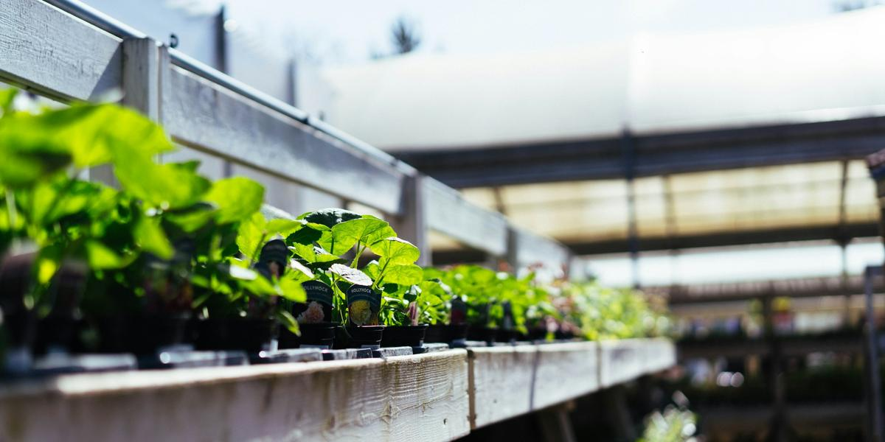

Keeping Hydroponic Reservoirs Cool in a Texas Summer
This post may contain affiliate links. As an Amazon Associate I earn from qualifying purchases.
If you grow anything in Texas, you already know summer changes the rules. Hydroponics is no different. The single most common reason a summer system goes from thriving to slimy is warm water. The good news is that most of the fixes are cheap, simple, and work just as well in an apartment as in an RV or a mobile home.
Why warm water is a problem
Roots need oxygen. Warm water holds less dissolved oxygen than cool water, and warm, low-oxygen water is where root rot organisms tend to thrive. UF/IFAS recommends keeping nutrient solution between about 65°F and 80°F for lettuce in small systems and lists good oxygenation as a priority. University of Hawaii material on small hydroponic systems states plainly that high solution temperature is detrimental to plant growth, and recommends a solution tank big enough to buffer temperature swings between day and night.
University of Hawaii work also recommends lower nutrient concentrations during hot weather. So in summer, you are managing two things: heat and strength.
Fix #1: Use more water
A small amount of water heats up fast. A larger amount changes temperature more slowly. If you have been growing in quart jars, summer is the time to move to half-gallon jars or opaque totes. This is the simplest, cheapest change, and it follows the University of Hawaii advice about tank size directly.
Fix #2: Block the sun and the light
Never let sunlight hit your reservoir. Dark wraps block light and prevent algae, but black also absorbs heat when it sits in the sun. A good combination is a dark inner layer to block light with a white or reflective outer layer to bounce heat. Foil-faced insulation board, a white towel, or a white painted bucket all help.
Fix #3: Move the system
Location matters more than gear. Inside the air-conditioned part of your home is the easiest win. Avoid west-facing windows that bake in the afternoon, the floor next to a fridge exhaust, and the top of an RV dash. In a tiny home or RV, a low, shaded spot away from the walls that take afternoon sun is usually coolest. If you grow outdoors, morning sun and afternoon shade is the goal.
Fix #4: Insulate
A cooler is already an insulated reservoir. Many growers use a small picnic cooler as a DWC tub, cutting holes in the lid for net pots. Foam board around a tote works too. Insulation slows heat getting in during the day.
Fix #5: Frozen water bottles (with care)
Dropping a sealed, frozen water bottle into a reservoir can lower the temperature for a while. Use clean, sealed bottles so you do not dilute your nutrients. This is a stopgap for a heat wave, not a full-season plan, and big temperature swings are not ideal either. Use it to take the edge off a hot afternoon.
Fix #6: Add air (for non-Kratky systems)
In DWC, an aquarium air pump and air stone add oxygen, which helps offset warmer water. Remember that the pump itself can add a little heat if it sits near the reservoir, so mount it nearby, not on top. Add a check valve so water cannot siphon back into the pump. You can find these on the Gear page. For Kratky jars, do not add an air stone; the air gap is doing that job.
Fix #7: Use a milder nutrient mix
Following the University of Hawaii guidance, lean toward the milder side of your nutrient label in hot months. Plants drink more water in heat, and in Kratky systems the remaining solution can become more concentrated as the water drops. Burnt leaf tips in summer are often a sign to go gentler. See pH and EC/PPM explained.
Fix #8: Grow for the season
Lettuce is a cool-season crop and tends to bolt (shoot up and turn bitter) when it is hot. In a Texas summer, consider heat-tolerant lettuce varieties and crops that like warmth. Basil is a classic summer choice. Look for seed packets labeled "heat tolerant" or "slow to bolt." My 5 easiest crops for first-timers post notes which ones handle heat best.
Get a thermometer
An inexpensive aquarium or probe thermometer turns guesswork into a number. Check the water in the late afternoon, when it is usually warmest. If it regularly climbs past about 80°F, use the fixes above. Write the readings down along with how the plants look.
Warning signs of heat stress
- Roots turning tan or brown and feeling slimy
- A musty or rotten smell from the reservoir
- Plants wilting in the afternoon even though they have water
- Lettuce suddenly stretching tall in the center (bolting)
- Algae blooms in any container that lets light in
If you see these, cool things down first, then read fixing root rot and algae.
The Texas heat chapter
My book, The Soil-Free Farming Revolution, has a full chapter on growing through Texas heat, with seasonal crop planning and setups that stay cooler. Start with the free mini-guide on the home page if you are brand new.